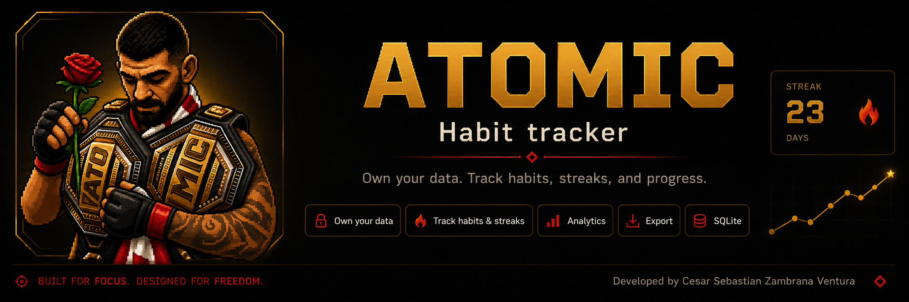

Da seguimiento a lo importante
Mantén visibles tus hábitos diarios y semanales sin hacer que el sistema pese más que la rutina.
Seguimiento privado de hábitos · En desarrollo
ATOMIC es un producto privado en desarrollo para dar seguimiento a hábitos, notar patrones y mantener claro el progreso personal sin convertirlo en un feed.

La idea
Mantén visibles tus hábitos diarios y semanales sin hacer que el sistema pese más que la rutina.
Vuelve al progreso con el contexto suficiente para entender consistencia, pausas e impulso.
El trabajo sobre hábitos se mantiene privado, práctico y lejos de la comparación social.
Principios
Acceso
ATOMIC no está abierto para registro público. El acceso está limitado al propietario y al equipo mientras el producto se refina.